Medicamentos¶
Se presentará una pantalla que contendrá un listado con todos los Medicamentos que se encuentren registrados en el sistema hasta la fecha.

Junto con el listado, se ofrecerán un conjunto de funcionalidades que permitirán manipular estos Medicamentos
Estas funcionalidades son:
Alta Medicamento¶
Si el usuario desea crear un nuevo Medicamento, deberá presionar el botón Alta.

A continuación el sistema lo redirigirá a la siguiente pantalla:

En esta parte al usuario se le presentará un formulario y deberá ingresar los datos solicitados para dar de alta un nuevo Medicamento.
Atención
El sistema siempre validará que la información ingresada sea correcta. En caso de que los datos ingresados sean incorrectos el sistema lo informará. En este punto, las posibles causas de errores son:
- Uno o más campos vacíos.
- El código de barras del medicamento ya existe.
- La monodroga ingresada no existe.
Una vez completado el formulario, el usuario tendrá dos opciones:
- Presionar el botón
Guardar y Volver.- Presionar el botón
Guardar y Continuar.
El botón Guardar y Volver permite guardar el Medicamento en el sistema y volver a la pantalla
principal de medicamentos.
El botón Guardar y Continuar permite guardar el Medicamento en el sistema y seguir dando de alta nuevos Medicamentos.
Modificar Stock Mínimo¶
Si el usuario desea modificar el stock mínimo de un Medicamento, deberá seleccionar el botón de Acción asociado al Medicamento y presionar la pestaña Modificar Stock Mínimo.
Una vez realizado el paso anterior, el sistema lo redirigirá a la siguiente pantalla:

En esta parte el usuario se le presentará un formulario y deberá actualizar la información del stock asociado al Medicamento.
Atención
El sistema siempre validará que la información ingresada sea correcta. En caso de que los datos ingresados sean incorrectos el sistema lo informará. En este punto, las posibles causas de errores son:
- No se ingresó un stock mínimo.
- El stock mínimo ingresado no posee un formato correcto.
- El stock mínimo ingresado es menor a cero.
Una vez completado el formulario, el usuario deberá presionar el botón Guardar Cambios y el sistema se encargará de actualizar el stock mínimo del Medicamento seleccionado.
Modificar Precio de Venta¶
Si el usuario desea modificar el precio de venta de un Medicamento, deberá seleccionar el botón de Acción asociado al Medicamento y presionar la pestaña Modificar Precio Venta.
Una vez realizado el paso anterior, el sistema lo redirigirá a la siguiente pantalla:

En esta parte el usuario se le presentará un formulario y deberá actualizar la información del precio de venta asociado al Medicamento.
Atención
El sistema siempre validará que la información ingresada sea correcta. En caso de que los datos ingresados sean incorrectos el sistema lo informará. En este punto, las posibles causas de errores son:
- No se ingresó un precio de venta.
- El precio de venta ingresado no posee un formato correcto.
- El precio de venta ingresado es menor a cero.
Una vez completado el formulario, el usuario deberá presionar el botón Guardar Cambios y el sistema se encargará de actualizar el precio de venta del Medicamento seleccionado.
Eliminar Medicamento¶
Si el usuario desea eliminar un Medicamento, deberá seleccionar el botón de Acción asociado al Medicamento y presionar la pestaña Eliminar.
Una vez realizado el paso anterior aparecerá la siguiente ventana emergente (modal):

En esta parte el usuario deberá decidir si confirma la eliminación del Medicamento o no. Si desea confirmar la eliminación deberá presionar el botón Confirmar, caso contrario, presionará el botón Cancelar.
Nota
Aquellos Medicamentos que cumplan las siguientes condiciones NO podrán ser eliminados:
- Esten pendientes parcial o totalmente en un Pedido a Laboratorio.
- Esten pendientes parcial o totalmente en un Pedido de Farmacia.
- Posean lotes activos.
El sistema se encargará de informar al usuario las razones por las cuales el Medicamento seleccionado no puede eliminarse. En dicho caso, el sistema mostrara una ventana emergente (modal) como esta:

Ver Lotes¶
Si el usuario desea ver los lotes de un Medicamento, deberá seleccionar el botón de Acción asociado al Medicamento y presionar la pestaña Ver Lotes.
Una vez realizado el paso anterior aparecerá la siguiente ventana emergente (modal):

Esta ventana mostrará todos los lotes que estén asociados al Medicamento.
Nota
En caso de que el Medicamento seleccionado no posea lotes activos, el sistema se encargará de mostrar la siguiente ventana emergente (modal):

Stock Global¶
Si el usuario desea ver el Stock de un Medicamento, deberá seleccionar el botón de Acción asociado al Medicamento y presionar la pestaña Stock Global, el cual es el Stock de la Drogueria mas el de las sucursales.
Una vez realizado el paso anterior aparecerá la siguiente ventana emergente (modal):
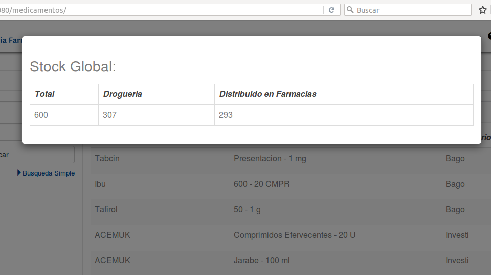Reportes¶
Si el usuario desea visualizar y/o generar reportes de estadisticas en relacion a los Medicamentos, debera seleccionar el boton de Reportes.
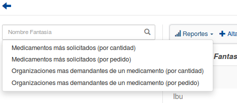Esta funcionalidad cuenta con 4 modalidades:
Medicamentos mas solicitados por cantidad¶
Si el usuario desea que los reportes se generen en base al volumen de medicamentos pedidos por cantidad, debera presionar la opcion Medicamentos mas solicitados por cantidad.
Al hacerlo, se mostrara la siguiente pantalla:
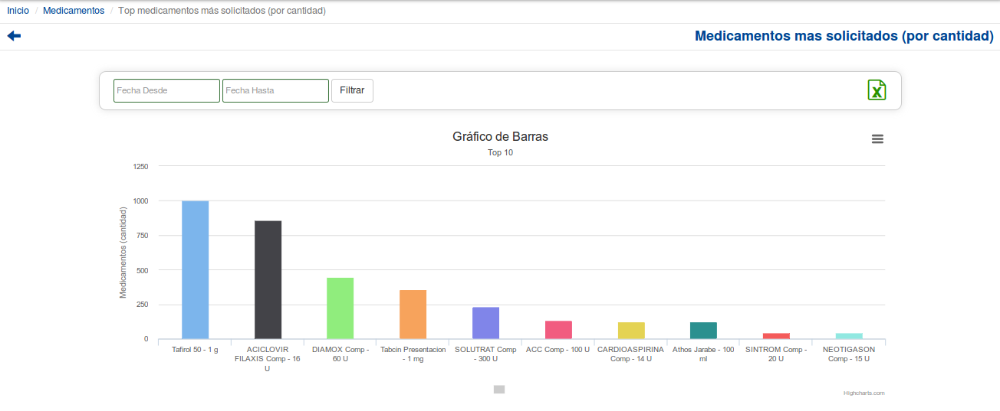 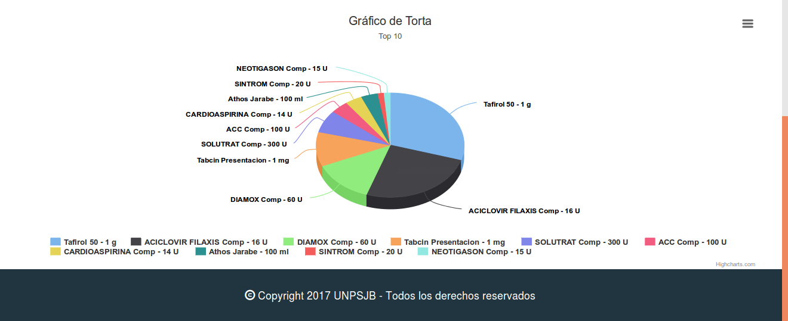Si el usuario desea ajustar el rango de fecha sobre el cual se genera el reporte puede hacerlo utilizando la modalidad de filtrado por fechas:
El usuario tendrá que ingresar los parámetros de búsqueda en el formulario, y presionar el botón Filtrar.
Nota
Todos los campos son opcionales, de no especificarse ningún criterio de búsqueda el sistema mostrará la informacion historica completa.

Si el usuario desea exportar el resultado generado a una planilla de Excel, debera presionar el ícono de excel.
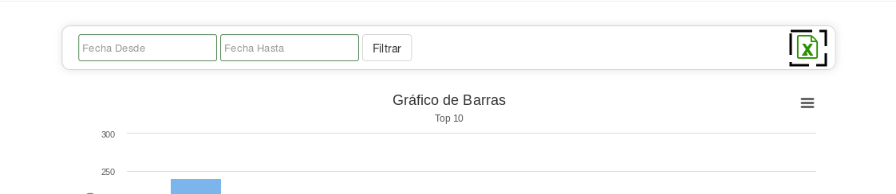Si el usuario desea exportar el resultado en un formato de imagen PNG, JPEG, PDF o SVG, debera presionar el boton de herramientas de exportacion y seleccionar la opcion correspondiente.
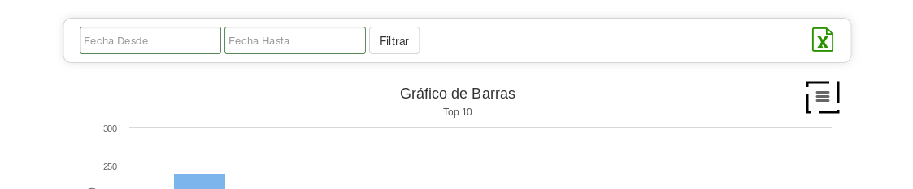Medicamentos mas solicitados por pedido¶
Si el usuario desea que los reportes se generen en base a la cantidad de Medicamentos mas solicitados por pedidos realizados, debera presionar la opcion Medicamentos mas solicitados por pedido.
Al hacerlo, se mostrara la siguiente pantalla:
 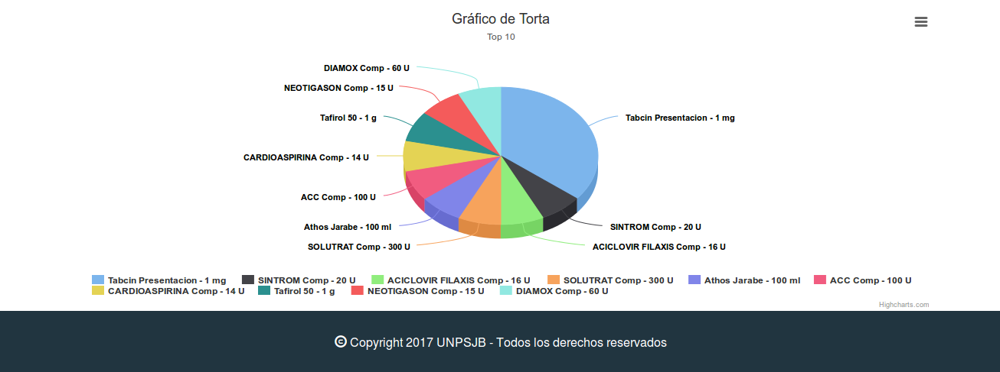
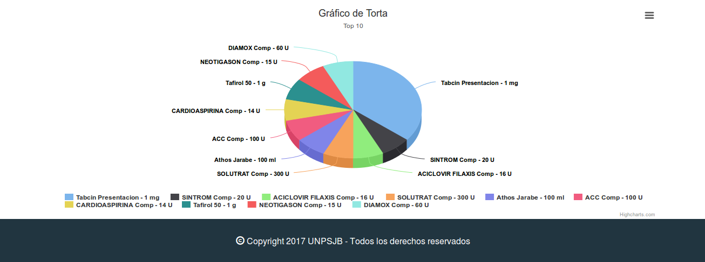
Si el usuario desea ajustar el rango de fecha sobre el cual se genera el reporte puede hacerlo utilizando la modalidad de filtrado por fechas:
El usuario tendrá que ingresar los parámetros de búsqueda en el formulario, y presionar el botón Filtrar.
Nota
Todos los campos son opcionales, de no especificarse ningún criterio de búsqueda el sistema mostrará la informacion historica completa.
Si el usuario desea exportar el resultado generado a una planilla de Excel, debera presionar el ícono de excel.
Si el usuario desea exportar el resultado en un formato de imagen PNG, JPEG, PDF o SVG, debera presionar el boton de herramientas de exportacion y seleccionar la opcion correspondiente.
Organizaciones mas demandantes de un medicamento por cantidad¶
Si el usuario desea que los reportes se generen en base a la cantidad de Organizaciones mas demandantes de un medicamento, debera presionar la opcion Organizaciones mas demandantes de un medicamento por cantidad.
Al hacerlo, se mostrara la siguiente pantalla:
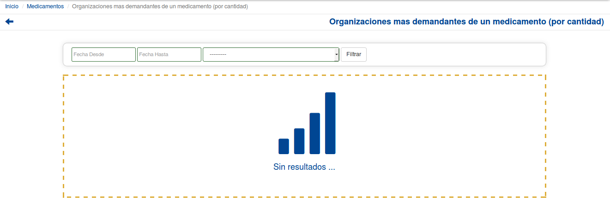Si el usuario desea ajustar el rango de fecha sobre el cual se genera el reporte puede hacerlo utilizando la modalidad de filtrado por fechas:
El usuario tendrá que ingresar los parámetros de búsqueda en el formulario, y presionar el botón Filtrar.
 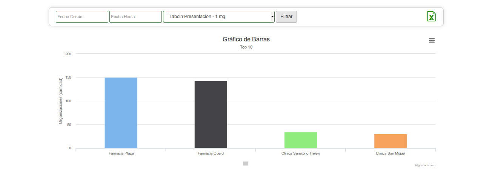
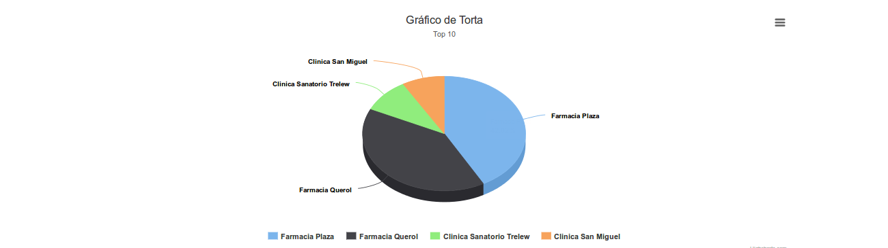
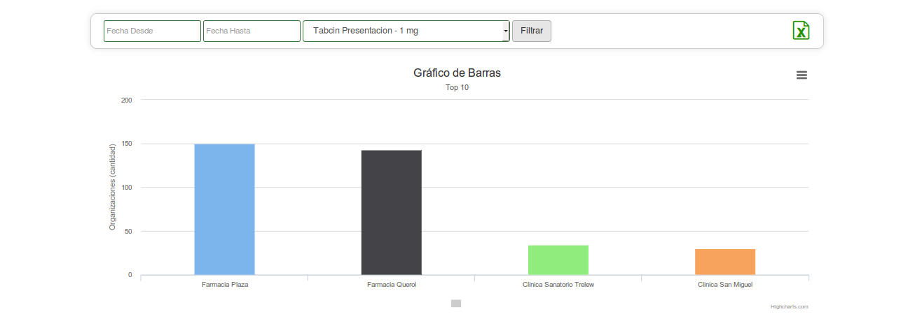
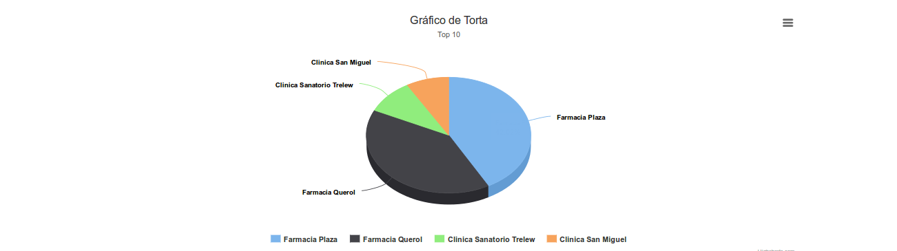
Nota
Todos los campos son opcionales, de no especificarse ningún criterio de búsqueda el sistema mostrará la informacion historica completa.
Si el usuario desea exportar el resultado generado a una planilla de Excel, debera presionar el ícono de excel.
Si el usuario desea exportar el resultado en un formato de imagen PNG, JPEG, PDF o SVG, debera presionar el boton de herramientas de exportacion y seleccionar la opcion correspondiente.
Organizaciones mas demandantes de un medicamento por pedido¶
Si el usuario desea que los reportes se generen en base a la cantidad de pedidos segun Organizaciones mas demandantes de un medicamento por pedido, debera presionar la opcion Organizaciones mas demandantes de un medicamento por pedido.
Al hacerlo, se mostrara la siguiente pantalla:
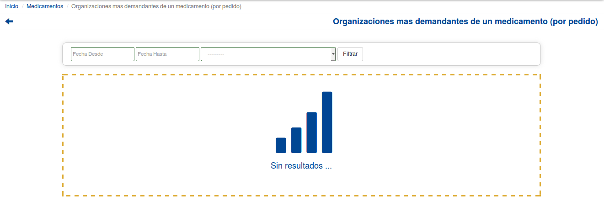Si el usuario desea ajustar el rango de fecha sobre el cual se genera el reporte puede hacerlo utilizando la modalidad de filtrado por fechas:
El usuario tendrá que ingresar los parámetros de búsqueda en el formulario, y presionar el botón Filtrar.
Nota
Todos los campos son opcionales, de no especificarse ningún criterio de búsqueda el sistema mostrará la informacion historica completa.
Si el usuario desea exportar el resultado generado a una planilla de Excel, debera presionar el ícono de excel.
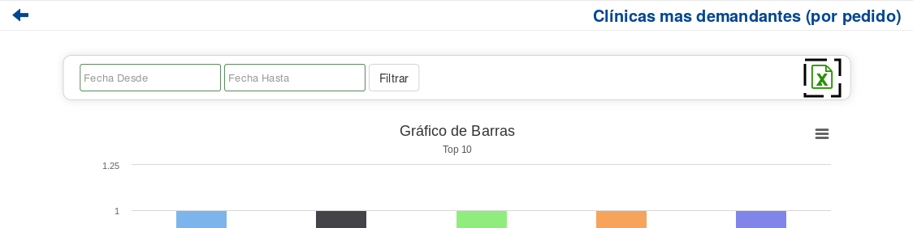Si el usuario desea exportar el resultado en un formato de imagen PNG, JPEG, PDF o SVG, debera presionar el boton de herramientas de exportacion y seleccionar la opcion correspondiente.
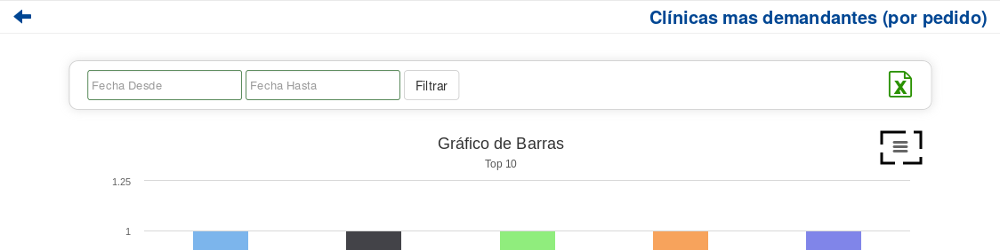Formulario de Búsqueda¶
Si el usuario desea visualizar sólo aquellos Medicamentos que cumplan con algunos criterios en específico, deberá utilizar el formulario de búsqueda.

Este formulario cuenta con dos modalidades:
- Búsqueda simple: permite buscar los Medicamentos por nombre fantasía.
- Búsqueda avanzada: permite buscar los Medicamentos por nombre fantasía y laboratorio.
Nota
Todos los campos son opcionales, de no especificarse ningún criterio de búsqueda el sistema mostrará todos los Medicamentos.
El usuario tendrá que ingresar los parámetros de búsqueda en el formulario, y presionar el botón Buscar. El sistema visualizará aquellos Medicamentos que cumplan con todas las condiciones especificadas.
Si el usuario desea limpiar los filtros activos, deberá presionar el boton Limpiar.